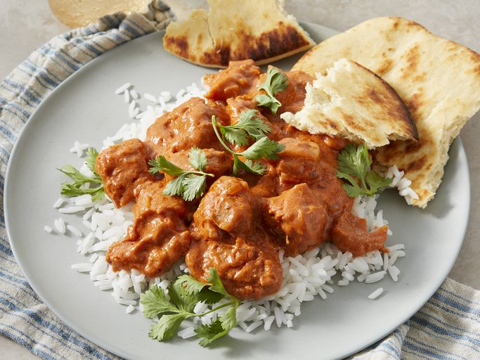

Welcome to the best Butter Chicken you'll ever have.

Description
This butter chicken is nothing like you've ever had, it only takes 35 minutes to make
and you get so many different flavors. I hope you're ready.
Ingredients
- 2 tablespoons peanut oil, divided
- 1 shallot, finely chopped
- 1/4 white onion, chopped
- 2 tablespoons butter
- 1 tablespoon ginger garlic paste
- Garam masala
- 1 cup tomato puree
- More spices
- 1/4 cup plain yogurt
- 1 pound boneless chicken thighs, cut into pieces
Steps
- Saute shallots and onion in peanut oil until translucent.
- Stir in your butter, ginger-garlic, and tomato puree.
- Stir in your yogurt and reduce heat to simmer.
- Sear your chicken in a new skillet on high.
- Reduce heat and add cooked chicken into sauce.
- Serve on rice or naan and enjoy.
Homepage